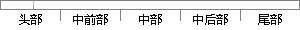

超声波在被测 物 中的传播时间
片段位置图

相似结果
相似片段：
量误差公式为 ε = ε CL ± σ CL = ∂V ∂L ε L + ∂V ∂t ε t ± æ è 2 ∂V ö ∂L ø σ 2 L + æ è ∂V ∂t 2 ö ø σ 2 t , (4) 式中V为被测件声速，L为被测件厚度，t为超声波在被测件中的传播时间，ε L、ε t 分别为厚度和时间直接测量值的系统误差，σ L、σ t 分别为厚度和时间直接测量值的随机误差。 仪器的时间测量精度为1 ns，试样尺寸的测
| 对比库： | 已发表资源库 |
| 来源： | "Effect of Microstructure of Laser Solid Forming TC4 Titanium Alloy on Ultrasonic Parameters", Chinese Journal of Lasers, 2015. 查看来源 |
| 相似率 | 100% （严重抄袭） |